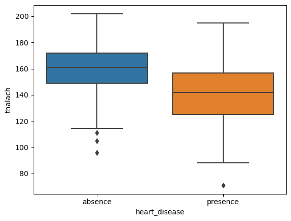
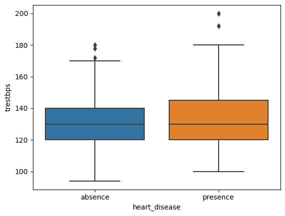
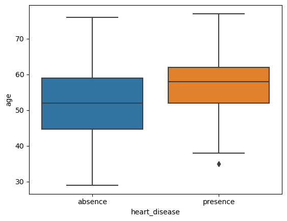
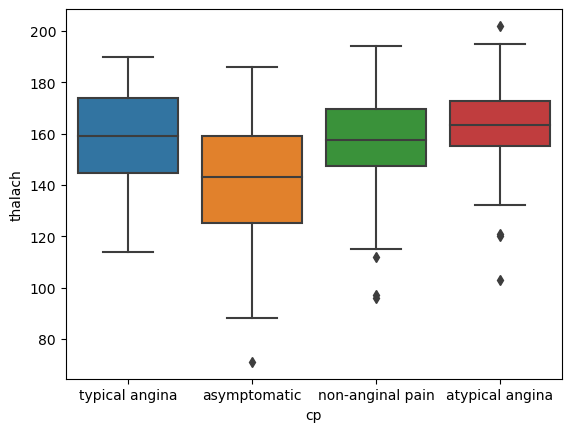

# import libraries
import pandas as pd
import numpy as np
import matplotlib.pyplot as plt
import seaborn as sns
# load data
heart = pd.read_csv('data/heart_disease.csv')
# data for patients WITH heart disease
yes_hd = heart[heart.heart_disease == 'presence']
# data for patients WITHOUT heart disease
no_hd = heart[heart.heart_disease == 'absence']Heart Disease Research Project
In this project, I will investigate some data from a sample of patients who were evaluated for heart disease at the Cleveland Clinic Foundation. The data was downloaded from the UCI Machine Learning Repository and then cleaned for analysis. The principal investigators responsible for data collection were:
- Hungarian Institute of Cardiology. Budapest: Andras Janosi, M.D.
- University Hospital, Zurich, Switzerland: William Steinbrunn, M.D.
- University Hospital, Basel, Switzerland: Matthias Pfisterer, M.D.
- V.A. Medical Center, Long Beach and Cleveland Clinic Foundation: Robert Detrano, M.D., Ph.D.
For this project, I will investigate the following variables, formulate hypotheses, and draw conclusions from the results of appropraite statistical testing:
chol: serum cholestorol in mg/dlfbs: whether the patient’s fasting blood sugar is >120 mg/dl (1: yes; 0: no)thalach: maximum heart rate achieved in exercise testtrestbps:resting blood pressure in mm Hgage:age in yearscp: chest pain type (‘typical angina’, ‘atypical angina’, ‘non-anginal pain’, or ‘asymptomatic’)
0 Import the libraries and load in our data
# diagnosis heart disease
yes_hd.head()| age | sex | trestbps | chol | cp | exang | fbs | thalach | heart_disease | |
|---|---|---|---|---|---|---|---|---|---|
| 1 | 67 | male | 160 | 286 | asymptomatic | 1 | 0 | 108 | presence |
| 2 | 67 | male | 120 | 229 | asymptomatic | 1 | 0 | 129 | presence |
| 6 | 62 | female | 140 | 268 | asymptomatic | 0 | 0 | 160 | presence |
| 8 | 63 | male | 130 | 254 | asymptomatic | 0 | 0 | 147 | presence |
| 9 | 53 | male | 140 | 203 | asymptomatic | 1 | 1 | 155 | presence |
# diagnosis NO heart disease
no_hd.head()| age | sex | trestbps | chol | cp | exang | fbs | thalach | heart_disease | |
|---|---|---|---|---|---|---|---|---|---|
| 0 | 63 | male | 145 | 233 | typical angina | 0 | 1 | 150 | absence |
| 3 | 37 | male | 130 | 250 | non-anginal pain | 0 | 0 | 187 | absence |
| 4 | 41 | female | 130 | 204 | atypical angina | 0 | 0 | 172 | absence |
| 5 | 56 | male | 120 | 236 | atypical angina | 0 | 0 | 178 | absence |
| 7 | 57 | female | 120 | 354 | asymptomatic | 1 | 0 | 163 | absence |
1. Cholesterol level (serum cholestorol in mg/dl)
1.1 Cholesterol level - patients with Heart Disease
To start, I’ll investigate cholesterol levels for patients with heart disease :
# cholesterol levels for patients with heart disease
chol_hd = yes_hd.chol
chol_hd1 286
2 229
6 268
8 254
9 203
...
297 241
298 264
299 193
300 131
301 236
Name: chol, Length: 139, dtype: int64In general, total cholesterol over 240 mg/dl is considered “high” (and therefore unhealthy). Let’s calculate the mean cholesterol level for patients who were diagnosed with heart disease :
# calculate average cholesterol levels for heart disease patients
mean_chol_hd = np.mean(chol_hd)
print(mean_chol_hd)251.4748201438849As we can see, the mean cholesterol level for patients who were diagnosed with heart disease is over 240 mg/dl and considered “high” and therefore unhealthy. This poses the question - do people with heart disease have high cholesterol levels (greater than or equal to 240 mg/dl) on average?
To obtain an answer to this question which is underpinned by statistics, let’s first formulate our hypotheses :
Null:People with heart disease have an average cholesterol level equal to 240 mg/dlAlternative:People with heart disease have an average cholesterol level that is greater than 240 mg/dl
1.2 Cholesterol levels for heart disease patients (1-sided T-test)
from scipy.stats import ttest_1samp# Calculate pval for cholesterol levels in heart disease patients
tstat, pval_2sided = ttest_1samp(chol_hd, 240)
# print pval
print(pval_2sided)0.007082206781031141Note that this is the p-value for a two-sided test, however we can calculate the p-value for the one-sided test simply by dividing the two-sided p-value in half :
# Convert 2 sided pval to 1 sided
pval_1sided = pval_2sided / 2
print(pval_1sided)0.0035411033905155707As the p-value of 0.0035411033905155707 is below our significance threshold of 0.05, we can conclude that heart disease patients have an average cholesterol level significantly greater than 240 mg/dl.
1.3 Cholesterol level - patients without Heart Disease
Let’s repeat the same steps for those patients without heart disease :
# cholesterol levels for patients without heart disease
chol_no_hd = no_hd.chol
chol_no_hd0 233
3 250
4 204
5 236
7 354
...
288 221
289 240
291 342
295 157
302 175
Name: chol, Length: 164, dtype: int64# calculate average cholesterol levels for NON heart disease patients
mean_chol_no_hd = np.mean(chol_no_hd)
print(mean_chol_no_hd)242.640243902439As we can see, the mean cholesterol level for patients who were diagnosed without heart disease is still over 240 mg/dl and considered “high” and therefore unhealthy. This poses the question - do people without heart disease have high cholesterol levels (greater than or equal to 240 mg/dl) on average?
1.4 Cholesterol levels for NON heart disease patients (1-sided T-test)
# Calculate pval for cholesterol levels in NON heart disease patients
tstat, pval_2sided = ttest_1samp(chol_no_hd, 240)
# print pval
print(pval_2sided)0.5279424046444101# Convert 2 sided pval to 1 sided
pval_1sided = pval_2sided / 2
print(pval_1sided)0.26397120232220506As the p-value of 0.26397120232220506 is above our significance threshold of 0.05, we can conclude that non-heart disease patients do not have an average cholesterol level significantly greater than 240 mg/dl.
2. Fasting Blood Sugar (mg/dl)
In general, a fasting blood sugar (fbs) level over 120 mg/dl is considered “high” (and therefore unhealthy). Remember from our dataset we do not have actual fbs values, only an indication of whether the level is above (1) or below 120.
2.1 Fasting Blood Sugar (fbs) analysis - patients with Heart Disease
Let’s first investigate the patients diagnosed with heart disease :
# calculate total number of patients in study
num_patients = len(heart)
print(num_patients)303# Calculate number of patients with fbs > 120
num_highfbs_patients = len(heart[heart.fbs == 1])
print(num_highfbs_patients)45Sometimes, part of an analysis will involve comparing a sample to known population values to see if the sample appears to be representative of the general population.
By some estimates, about 8% of the U.S. population had diabetes (diagnosed or undiagnosed) in 1988 when this data was collected. While there are multiple tests that contribute to a diabetes diagnosis, fasting blood sugar levels greater than 120 mg/dl can be indicative of diabetes (or at least, pre-diabetes). If this sample were representative of the population, approximately how many people would you expect to have diabetes? Calculate and print out this number.
expected_diabetes = round(num_patients * 0.08,0)
print(expected_diabetes)24.0print(f'The actual number of patients ({num_highfbs_patients}) with fasting blood sugar levels greater than 120 mg/dl is greater than the expected number of {expected_diabetes}.')The actual number of patients (45) with fasting blood sugar levels greater than 120 mg/dl is greater than the expected number of 24.0.2.2 Binomial Test - Fasting Blood Sugar (fbs)
Binomial tests are useful for comparing the frequency of some outcome in a sample to the expected probability of that outcome. In our case - does this sample come from a population in which the rate of fbs > 120 mg/dl is equal to 8%?
Let’s formulate our hypotheses :
Null:This sample was drawn from a population where 8% of people have fasting blood sugar > 120 mg/dlAlternative:This sample was drawn from a population where more than 8% of people have fasting blood sugar > 120 mg/dl
from scipy.stats import binom_testp_value = binom_test(num_highfbs_patients, n=num_patients, p=0.08, alternative = 'greater')
print(p_value)4.689471951448875e-05/tmp/ipykernel_1255/443799598.py:1: DeprecationWarning: 'binom_test' is deprecated in favour of 'binomtest' from version 1.7.0 and will be removed in Scipy 1.12.0.
p_value = binom_test(num_highfbs_patients, n=num_patients, p=0.08, alternative = 'greater')print(f'The p-value of {p_value} is below the significance threshold of 0.05 and so we can conclude that this sample was drawn from a population where more than 8% of people have fasting blood sugar > 120 mg/dl.')The p-value of 4.689471951448875e-05 is below the significance threshold of 0.05 and so we can conclude that this sample was drawn from a population where more than 8% of people have fasting blood sugar > 120 mg/dl.3. Investigation of thalach (maximum heart rate achieved in exercise test)
Each of the patients in this dataset underwent an exercise test, during which their heart rate was monitored. For each patient, thalach gives us the highest heart rate that the patient achieved during this test.
The question posed is - is thalach associated with whether or not a patient will ultimately be diagnosed with heart disease?
print(yes_hd.thalach.head())1 108
2 129
6 160
8 147
9 155
Name: thalach, dtype: int64print(no_hd.thalach.head())0 150
3 187
4 172
5 178
7 163
Name: thalach, dtype: int643.1 Side by side Boxplots of thalach levels for each diagnosis group
# create plot
sns.boxplot(data=heart, x='heart_disease', y='thalach')
plt.show()
From the above it would seem that patients diagnosed with heart disease have a lower mean thalach rate. Let’s save the thalach values for each class of patients.
# data for patients WITH heart disease
thalach_hd = yes_hd.thalach
# data for patients WITHOUT heart disease
thalach_no_hd = no_hd.thalach3.2 Difference in mean thalach levels between diagnosis groupings
And calculate the difference in mean thalach for each diagnosis grouping :
# calculate average thalach levels for heart disease patients
mean_thalach_hd = np.mean(thalach_hd)
print(mean_thalach_hd)139.25899280575538# calculate average thalach levels for NON-heart disease patients
mean_thalach_no_hd = np.mean(thalach_no_hd)
print(mean_thalach_no_hd)158.3780487804878mean_thalach_diff = mean_thalach_no_hd - mean_thalach_hd
print(mean_thalach_diff)19.119055974732423.3 Difference in median thalach levels between diagnosis groupings
Let’s also calculate the difference in median thalach:
# calculate average thalach levels for heart disease patients
median_thalach_hd = np.median(thalach_hd)
print(median_thalach_hd)142.0# calculate average thalach levels for NON-heart disease patients
median_thalach_no_hd = np.median(thalach_no_hd)
print(median_thalach_no_hd)161.0median_thalach_diff = median_thalach_no_hd - median_thalach_hd
print(median_thalach_diff)19.0We’d like to find out if the average thalach of a heart disease patient is significantly different from the average thalach for a person without heart disease. Let’s formulate this hypothesis :
Null:The average thalach for a person with heart disease is equal to the average thalach for a person without heart disease.Alternative:The average thalach for a person with heart disease is NOT equal to the average thalach for a person without heart disease.
And test it.
3.4 Two-sided t-test for thalach levels
from scipy.stats import ttest_ind# Calculate pval for thalach levels in heart disease patients
tstat, pval_2sided = ttest_ind(thalach_hd, thalach_no_hd)
# print pval
print(pval_2sided)3.456964908430172e-14print(f'The p-value of {pval_2sided} is below the significance threshold of 0.05 and so we can conclude that there is a significant difference in average thalach for people with heart disease compared to people with no heart disease.')The p-value of 3.456964908430172e-14 is below the significance threshold of 0.05 and so we can conclude that there is a significant difference in average thalach for people with heart disease compared to people with no heart disease.Using the same process, let’s investigate some other quantitative variables to see if they are also significantly associated with heart disease.
4. Investigation of Resting Blood Pressure (trestbps) - mm Hg
4.1 Side by side Boxplots of trestbps for each diagnosis group
# create plot
sns.boxplot(data=heart, x='heart_disease', y='trestbps')
plt.show()
It seems that the mean resting blood pressure levels are almost identical for both groups, however for those diagnosed with heart disease, the range is wider.
# data for patients WITH heart disease
trestbps_hd = yes_hd.trestbps
# data for patients WITHOUT heart disease
trestbps_no_hd = no_hd.trestbpsLet’s formulate our hypotheses :
Null:The average resting blood pressure for a person with heart disease is equal to the average resting blood pressure for a person without heart disease.Alternative:The average resting blood pressure for a person with heart disease is NOT equal to the average resting blood pressure for a person without heart disease.
4.2 Difference in mean resting blood pressure between diagnosis groupings
And calculate the difference in mean trestbps :
# calculate average trestbps levels for heart disease patients
mean_trestbps_hd = np.mean(trestbps_hd)
print(mean_trestbps_hd)134.568345323741# calculate average trestbps levels for NON-heart disease patients
mean_trestbps_no_hd = np.mean(trestbps_no_hd)
print(mean_trestbps_no_hd)129.25mean_trestbps_diff = mean_trestbps_hd - mean_trestbps_no_hd
print(mean_trestbps_diff)5.3183453237409994.3 Resting blood pressure 2-sided T-test
# Calculate pval for trestbps levels in heart disease patients
tstat, pval_2sided = ttest_ind(trestbps_hd, trestbps_no_hd)
# print pval
print(pval_2sided)0.008548268928594928print(f' The p-value of {pval_2sided} is less than the significance threshold of 0.05 and so we can conclude that there is a significant difference in average resting blood pressure for people with heart disease compared to people with no heart disease.') The p-value of 0.008548268928594928 is less than the significance threshold of 0.05 and so we can conclude that there is a significant difference in average resting blood pressure for people with heart disease compared to people with no heart disease.5. Investigation of Age
5.1 Side by side Boxplots of Age for each diagnosis group
# create plot
sns.boxplot(data=heart, x='heart_disease', y='age')
plt.show()
# data for patients WITH heart disease
age_hd = yes_hd.age
# data for patients WITHOUT heart disease
age_no_hd = no_hd.ageLet’s formulate our hypotheses :
Null:The average age of a person with heart disease is equal to the average age of a person without heart disease.Alternative:The average age of a person with heart disease is NOT equal to the average age of a person without heart disease.
# calculate average age for heart disease patients
mean_age_hd = np.mean(age_hd)
print(mean_age_hd)56.62589928057554# calculate average age for NON heart disease patients
mean_age_no_hd = np.mean(age_no_hd)
print(mean_age_no_hd)52.585365853658545.2 Difference in mean age between diagnosis groupings
mean_age_diff = mean_age_hd - mean_age_no_hd
print(mean_age_diff)4.040533426917001# Calculate pval for trestbps levels in heart disease patients
tstat, pval_2sided = ttest_ind(age_hd, age_no_hd)
# print pval
print(pval_2sided)8.955636917529706e-05print(f' The p-value of {pval_2sided} is below the significance threshold of 0.05 and so we can conclude that there is a significant difference in average age between people with heart disease and people with no heart disease.') The p-value of 8.955636917529706e-05 is below the significance threshold of 0.05 and so we can conclude that there is a significant difference in average age between people with heart disease and people with no heart disease.6. Chest Pain and Max Heart Rate
Next, let’s investigate the relationship between thalach (maximum heart rate achieved during exercise) and the type of heart pain a person experiences, by creating a set of side-by-side box plots of thalach for each chest pain type.
6.1 Side by side Boxplots of thalach for each type of chest pain
# create plot
sns.boxplot(data=heart, x='cp', y='thalach')
plt.show()
It looks as though atypical angina chest pain sufferers have a higher average thalach rate compared to the other chest pain types.
thalach_typical = heart.thalach[heart.cp == 'typical angina']
thalach_asymptom = heart.thalach[heart.cp == 'asymptomatic']
thalach_nonangin = heart.thalach[heart.cp == 'non-anginal pain']
thalach_atypical = heart.thalach[heart.cp == 'atypical angina']6.2 ANOVA test - chest pain
Let’s run a single hypothesis test to address the following null and alternative hypotheses:
Null:People with typical angina, non-anginal pain, atypical angina, and asymptomatic people all have the same average thalach.Alternative:People with typical angina, non-anginal pain, atypical angina, and asymptomatic people do not all have the same average thalach.
# run ANOVA
from scipy.stats import f_oneway
fstat, pval = f_oneway(thalach_typical,thalach_asymptom,thalach_nonangin,thalach_atypical)
print(pval)1.9065505247705008e-10At a 0.05, or for that matter a 0.01 significance level, the p-value indicates that there is at least one pair of chest pain categories for which people in those categories have significantly different thalach. At this stage, however, we won’t know which pair of chest pain categories! However we can leverage Tukey’s Range Test to unveil this.
6.3 Tukey’s Range Test - chest pain
Let’s run another hypothesis test to determine which of those pairs are significantly different. We will use an overall type I error rate of 0.05 for all six comparisons.
# run Tukey's range test
from statsmodels.stats.multicomp import pairwise_tukeyhsd
tukey_results = pairwise_tukeyhsd(heart.thalach, heart.cp, 0.05)
print(tukey_results) Multiple Comparison of Means - Tukey HSD, FWER=0.05
=========================================================================
group1 group2 meandiff p-adj lower upper reject
-------------------------------------------------------------------------
asymptomatic atypical angina 21.7394 0.0 12.7442 30.7347 True
asymptomatic non-anginal pain 14.7264 0.0 7.2583 22.1945 True
asymptomatic typical angina 15.276 0.0081 2.9707 27.5812 True
atypical angina non-anginal pain -7.013 0.2481 -16.7587 2.7327 False
atypical angina typical angina -6.4635 0.6213 -20.2702 7.3432 False
non-anginal pain typical angina 0.5495 0.9995 -12.3145 13.4136 False
-------------------------------------------------------------------------On the basis of the Tukey’s Range Test, we can conclude that there is a statistically significant difference in mean thalach levels between patients suffering from asymptomatic chest pain and the other three pain categories.
6.4 Chi-Square Test - chest pain
Finally, let’s investigate the relationship between the kind of chest pain a person experiences and whether or not they have heart disease.
Our input for this test needs to be in the form of a contingency table which we can easily create using pandas .crosstab() function :
# create contingency table
table = pd.crosstab(heart.heart_disease, heart.cp)
print(table)cp asymptomatic atypical angina non-anginal pain typical angina
heart_disease
absence 39 41 68 16
presence 105 9 18 7Let’s now run a hypothesis test for the following null and alternative hypotheses:
Null:There is NOT an association between chest pain type and whether or not someone is diagnosed with heart disease.Alternative:There is an association between chest pain type and whether or not someone is diagnosed with heart disease.
# run Chi-square test
from scipy.stats import chi2_contingency
chi2, pval, dof, expected = chi2_contingency(table)
print(pval)1.2517106007837527e-17print(f' The p-value of {pval} is below the significance threshold of 0.05 and so we can conclude that there is a significant association between chest pain type and whether or not someone is diagnosed with heart disease.') The p-value of 1.2517106007837527e-17 is below the significance threshold of 0.05 and so we can conclude that there is a significant association between chest pain type and whether or not someone is diagnosed with heart disease.7. Conclusions
The results of my analyis of the study data are summarised below :
1. Cholesterol levels
Hypotheses
Null:People with heart disease have an average cholesterol level equal to 240 mg/dlAlternative:People with heart disease have an average cholesterol level that is greater than 240 mg/dl
Conclusion
The p-value of 0.0035411033905155707 is below the significance threshold of 0.05 and so we can conclude that heart disease patients have an average cholesterol level significantly greater than 240 mg/dl.
2. Fasting Blood Sugar (fbs)
Hypotheses
Null:This sample was drawn from a population where 8% of people have fasting blood sugar > 120 mg/dlAlternative:This sample was drawn from a population where more than 8% of people have fasting blood sugar > 120 mg/dl
Conclusion
The p-value of 4.689471951448875e-05 is below the significance threshold of 0.05 and so we can conclude that this sample was drawn from a population where more than 8% of people have fasting blood sugar > 120 mg/dl.
3. Thalach (maximum heart rate achieved in exercise test)
Hypotheses
Null:The average thalach for a person with heart disease is equal to the average thalach for a person without heart disease.Alternative:The average thalach for a person with heart disease is NOT equal to the average thalach for a person without heart disease.
Conclusion
The p-value of 8.955636917529706e-05 is below the significance threshold of 0.05 and so we can conclude that there is a significant difference in average thalach for people with heart disease compared to people with no heart disease.
4. Resting blood pressure
Hypotheses
Null:The average resting blood pressure for a person with heart disease is equal to the average resting blood pressure for a person without heart disease.Alternative:The average resting blood pressure for a person with heart disease is NOT equal to the average resting blood pressure for a person without heart disease.
Conclusion
The p-value of 0.008548268928594928 is less than the significance threshold of 0.05 and so we can conclude that there is a significant difference in average resting blood pressure for people with heart disease compared to people with no heart disease.
5. Age
Hypotheses
Null:The average age of a person with heart disease is equal to the average age of a person without heart disease.Alternative:The average age of a person with heart disease is NOT equal to the average age of a person without heart disease.
Conclusion
The p-value of 8.955636917529706e-05 is below the significance threshold of 0.05 and so we can conclude that there is a significant difference in average age between people with heart disease and people with no heart disease.
6. Chest pain type
Hypotheses 1
Null:People with typical angina, non-anginal pain, atypical angina, and asymptomatic people all have the same average thalach.Alternative:People with typical angina, non-anginal pain, atypical angina, and asymptomatic people do not all have the same average thalach.
Conclusion 1
On the basis of the Tukey’s Range Test, we can conclude that there is a statistically significant difference in mean thalach levels between patients suffering from asymptomatic chest pain and the other three pain categories.
Hypotheses 2
Null:There is NOT an association between chest pain type and whether or not someone is diagnosed with heart disease.Alternative:There is an association between chest pain type and whether or not someone is diagnosed with heart disease.
Conclusion 2
On the basis of the Chi-square test, the p-value of 1.2517106007837527e-17 is below the significance threshold of 0.05 and so we can conclude that there is a significant association between chest pain type and whether or not someone is diagnosed with heart disease.